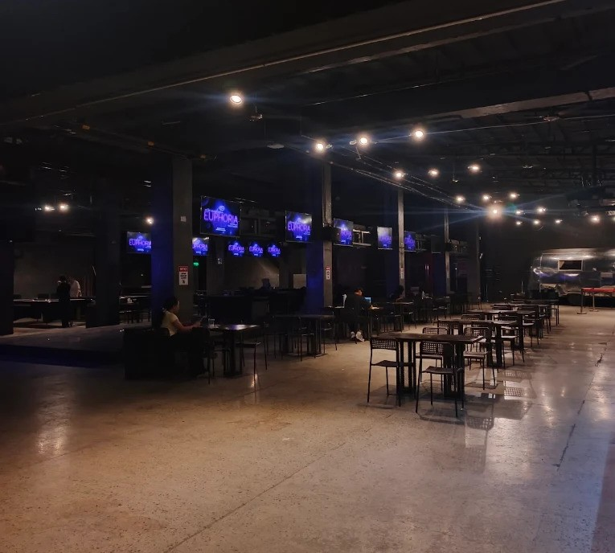
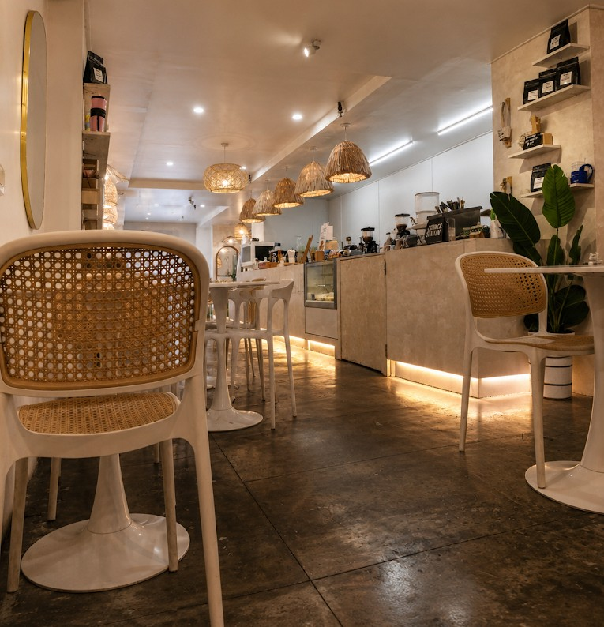
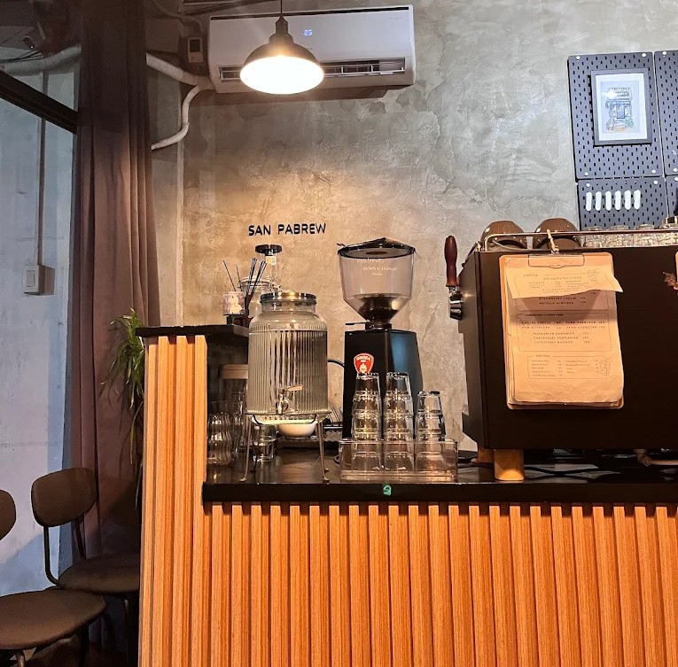

My Most Favorites
Warehouse Coffee
Recto Ave, Sampaloc, Maynila.
A café that features an interior inspired by a warehouse in Brooklyn, New York. It has unique atmosphere and serves great coffee, good for relaxing or spending the day after long hours of work. I highly recommend this place.

Pahuway Coffee by R&R
Taft Ave, Ermita, Manila.
A cozy coffee shop that serves excellent and expensive coffee. It has more character and warmer ambiance, it also serves meals such as rice and desserts. I would recommend going here if you want to be a little bit sophisticated.

San Pabrew
Maysilo, Mandaluyong City.
An underrated gem that offers a unique coffee experience in a relaxed setting. It's perfect for those looking for a quiet place to enjoy quality coffee and light meals. Their nutella drink is a must-try! One of the best drinks I've ever tasted.
